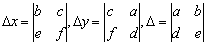
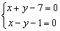
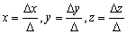

向量積
程式編寫日期: 2006年11月17日
這個程式可以用作計算下列的問題:
● 向量積 (Vector product)
● 純量三重積 (Scalar triple product)
● 向量三重積 (Vector triple product)
● 三階矩陣行列式 (3x3 Determinant)
● 三階伴隨矩陣及逆矩陣 (Adjoint and Inverse of 3×3 matrix)
● 聯立二元一次方程 (Simultaneous Linear Equations in 2 unknowns)
● 聯立三元一次方程 (Simultaneous Linear Equations in 3 unknowns)
●聯立三元一次齊次方程通解(General solution of Simultaneous Homogeneous Equations in 3 unknows)
程式編寫日期: 2006年11月日
程式(47步)
| 1 | Kout 1 | 2. | × | 3. | ENT | 4. | Kin 1 | 5. | + |
| 6. | Kout 2 | 7. | × | 8. | ENT | 9. | Kin 2 | 10. | + |
| 11. | Kout 3 | 12. | × | 13. | ENT | 14. | Kin 3 | 15. | = |
| 16. | Min | 17. | Kout 2 | 18. | × | 19. | Kout 4 | 20. | - |
| 21. | Kout 1 | 22. | × | 23. | Kout 5 | 24. | + | 25. | ( |
| 26. | Kout 2 | 27. | X←→K6 | 28. | Kin × 6 | 29. | × | 30. | Kout 1 |
| 31. | - | 32. | Kout 3 | 33. | × | 34. | Kin × 5 | 35. | Kout 6 |
| 36. | Kin - 5 | 37. | Kout 5 | 38. | X←→K1 | 39. | X←→K4 | 40. | ) |
| 41. | X←→K2 | 42. | Kin 5 | 43. | 0 | 44. | ) | 45. | X←→K3 |
| 46. | Kin 6 | 47. | RTN | 48. | 49. | 50. |
LRN 模式輸入程式(供 fx-3800P使用，程式長度: 47步 )
| Kout 1 | × | ENT 0 | Kin 1 | + |
| Kout 2 | × | ENT 0 | Kin 2 | + |
| Kout 3 | × | ENT 0 | Kin 3 | = |
| Min | Kout 2 | × | Kout 4 | - |
| Kout 1 | × | Kout 5 | + | ( |
| Kout 2 | X←→K6 | Kin × 6 | × | Kout 1 |
| - | Kout 3 | × | Kin × 5 | Kout 6 |
| Kin - 5 | Kout 5 | X←→K1 | X←→K4 | ) |
| X←→K2 | Kin 5 | 0 | ) | X←→K3 |
| Kin 6 | RTN | MODE . |
例題1: 計算 (i + 2j + 3k) × ( 4i + 5j + 6k)
按 P1 再按 1 RUN 2 RUN 3 RUN 4 RUN 5 RUN 6 RUN
(顯示-3) RUN (顯示6) RUN (顯示-3)
所以(i + 2j + 3k) x ( 4i + 5j + 6k) = -3i + 6j -3k
例題2: 計算 (i + 2j + 3k) × ( 4i + 5j + 6k)˙(2i - 3j + 7k)
按 P1 再按 1 RUN 2 RUN 3 RUN 4 RUN 5 RUN 6 RUN
2 RUN 3 +/- RUN 7 RUN 再按 MR (顯示 - 45)
所以(i + 2j + 3k) × ( 4i + 5j + 6k)˙(2i - 3j + 7k) = - 45
例題3: 計算 (i + 2j + 3k) × ( 4i + 5j + 6k) × (2i - 3j + 7k)
按 P1 再按 1 RUN 2 RUN 3 RUN 4 RUN 5 RUN 6 RUN
RUN RUN RUN 2 RUN 3 +/- RUN 7 RUN
(顯示 33) RUN (顯示 15) RUN (顯示 - 3)
所以 (i + 2j + 3k) × ( 4i + 5j + 6k) × (2i - 3j + 7k) = 33i + 15j - 3k
例題4: 計算下列的行列式:
按 P1 再按 1 RUN 2 RUN 3 RUN 7 RUN 8 RUN 9 RUN
6 RUN 5 RUN 2 RUN MR (顯示答案為 12)
例題5: 計算下列矩陣的伴隨矩陣。

按 P1 (先輸入第二列及第三列的數據)
7 RUN 4 RUN 6 RUN 8 RUN 9 RUN 7 RUN
注意現在要記下第一及第二欄的答案及同時輸入第一及二列數值
(顯示 -26) 2 RUN (顯示 -1) 1 RUN (顯示 31) 3 RUN
(顯示 20) 7 RUN (顯示 -10) 4 RUN (顯示 -10) 6 RUN
(顯示 -6) RUN (顯示 9) RUN (顯示 1)
因此，

計算完結後，按AC終止程式。
例題5: 計算下列矩陣的逆矩陣。
按 P1 (先輸入第二列及第三列的數據)
7 RUN 4 RUN 6 RUN 8 RUN 9 RUN 7 RUN
注意現在要記下第一及第二欄的答案及同時輸入第一及二列數值
(顯示 -26) 2 RUN (顯示 -1) 1 RUN (顯示 31) 3 RUN
(顯示 20) MR (顯示行列式值為 40) 7 RUN (顯示 -10) 4 RUN (顯示 -10) 6 RUN
(顯示 -6) RUN (顯示 9) RUN (顯示 1)
因此，

計算完結後，按AC終止程式。
註: 在輸入九個數據後，可在任何時間按 MR 顯示行列式的值，不過請注意若果在顯示最後伴隨矩陣的數值後，再按 RUN ， M 數值則會不等於行列式的值。
聯立二元一次方程式參考資料:
克萊瑪法則 (Cramer's rule)



例題6: 解以下聯立二元一次方程

按 P1 再按 1 RUN 1 RUN 7 +/- RUN 1 RUN 1 +/- RUN 1 +/- RUN
(顯示△x為 - 8) RUN (顯示△y為 - 6) RUN (顯示△為 - 2)
所以 x = (- 8)/(- 2) = 4, y = (- 6)/(- 2) =3
聯立三元一次方程式參考資料:
克萊瑪法則 (Cramer's rule)



例題7: 解聯立方程 :

注意輸入次序為: 3個x係數，3個y係數，3個z係數，3個常數，3個x係數，3個y係數
按 P1 再按 1 RUN 1 RUN 1 RUN 1 RUN 1 +/- RUN 3 RUN
1 RUN 2 RUN 1 RUN MR (顯示△為 - 2)
6 RUN 5 RUN 10 RUN MR (顯示△x為 - 2)
1 RUN 1 RUN 1 RUN MR (注意顯示 -△y為 4)
1 RUN - 1 RUN 3 RUN MR (顯示△z為 - 6)
所以 x = (- 2)/(- 2) = 1, y = (- 4)/(-2) = 2, z = (- 6)/(- 2) = 3
例題8: 求下列聯立方程的通解:

按 Prog 1 再按 1 RUN 1 RUN 1 RUN 1 RUN 1 +/- RUN 2 RUN
(顯示 3) RUN (顯示 - 1) RUN (顯示 - 2)
因此通解為 x = 3t, y = - t, z = - 2t